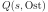
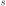
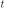
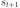
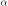
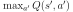

Bernd Porr
Q-lernen ist ein Lernalgorithmus wo eine Agentin selbständig lernt ihre Belohnung zu maximieren.
|

|
Abb. 1 zeigt eine klassische 2D-Welt, in der sich
eine solche Agentin (hier eine Maus) bewegt. Abb. 1A
zeigt den Zustandsraum. In diesem Beispiel ist der Zustandsraum 2D, in
dem sich die Agentin bewegen kann. Manche Zustände sind durch Wände
verboten und bei anderen gibt es eine Belohnung (als “Käse”
gekennzeichnet). Zustände werden mit gekennzeichnet und wenn sie
zum Zeitpunkt passieren, dann wird das als 
gekennzeichnet. Jeder Zustand besitzt auch eine skalare
Belohnungsvariable , die positiv ist, wenn es eine Belohnung gibt
und negativ  , wenn der Zustand bestraft werden soll. Für alle anderen
Zustände ist .
, wenn der Zustand bestraft werden soll. Für alle anderen
Zustände ist .
Abb. 1B zeigt die möglichen Aktionen , die die
Agentin durchführen kann. Eine Aktion bewirkt eine Bewegung von einem
Zustand zum Zeitpunkt zum Zustand und evtl gibt
es eine Belohnung () oder eine Bestrafung ().
Abb. 1C illustriert, wie man die Interaktion zwischen der autonomen Agentin und Umwelt als geschlossenes System interpretieren. Jede Aktion der Agentin erzeugt einen neuen Zustand und gegebenenfalls auch eine Belohnung .
![\includegraphics[width=0.75\textwidth]{learning_steps}](img13.svg)
|
Die Frage stellt sich nun, wie die Agentin von jeder beliebigen Stelle die Belohnungen findet. Das wird erreicht, indem jede Aktion bezüglich eines Zustandes eine Hilfsvariable erhält, die wir  nennen (siehe Abb. 2A). Jede Aktion in einem Zustand erhält damit verschiedene Q-Werte. Das Ziel ist es, den Aktionen einen hohen Q-Wert zu geben, die maximale Belohnung versprechen. In diesem Beispiel erhält jeder Zustand vier Q-Werte (Nord, West, Ost und Süd). Anfänglich sind alle Q-Werte null werden dann mit Hilfe der iterativen Bellmangleichung bestimmt:
wo die Lernrate ist und der “discount Factor” der zukünftige Belohnungen abwertet. Für die Beispiele hier nehmen wir einfach an, dass und  ist.Die Q-Werte werden nun iterativ gelernt, wobei die Agentin Zufallsaktionen durchführt und dann aktualisiert wird. Die Agentin kann immer einen Schritt voraussehen, also quasi über die Schwelle zu einem anderen Zustand gucken. Das wird in Q-Lernen “Beobachtung genannt”. Mehr kann die Agentin nicht sehen. Am Anfang sind all Q-Werte null. Nur die direkte Belohnung kann diesen Q-Wert von Null erhöhen, was in Abb. 2A gezeigt wird. Bei einer Lernrate von ergibt das dann für alle Aktionen einen Q-Wert von .
Der entscheidende Trick ist aber nun, wenn bei der nächsten
Zufallswanderung die simulierte Maus einen Schritt vor der primären
Belohnung steht und nicht mehr überall null
ist. Abb. 2B zeigt nun die Agentin einen Schritt
vor der Belohnung. Die Maus schaut also nun in die verschiedenen
Felder um sich herum und bestimmt dort den maximalen Q-Wert
, vergleicht den mit dem
aktuellen Q-Wert und korrigiert dann den aktuellen Q-Wert
anhand der Lernrate. Aus diesem Grunde wird der Term
 auch Vorhersagefehler oder im Englischen “Reward Prediction Error”
(RPE) genannt.
auch Vorhersagefehler oder im Englischen “Reward Prediction Error”
(RPE) genannt.
Das Experiment in Abb. 2 wird nun mit der Formel. 1 viele Male mit Zufallswanderungen bei einer maximalen Laufzeit  wiederholt, bis der Fehler im Mittel Null ist also die Q-Werte sich nicht mehr ändern. Das Endergebnis gibt dann eine Vorhersage der gesamten Belohnung in Abhängigkeit von und :
 |
(2) |
Soweit haben wir nur eine Matrix von Q-Werten aber wie kann diese Matrix nun verwendet werden, um schnell alle Belohnungen zu sammeln und Bestrafungen zu vermeiden? Einfach indem die Agentin sie immer in den Zustand springt, welches den höchsten Q-Wert hat. Das nennt sich eine “Policy” oder “Strategie”. Solch eine Strategie nennt sich “gierig” oder “greedy”, da sie immer die lokal stärkste Belohnung erarbeitet.
Praktisch gesehen, werden normalerweise das Lernen von Q (“exploration”) und das Ausführen der Strategie (“exploitation”) gemischt.
Wie wird bei deep Q-learning gelernt? Wenn man sich
Gl. 1 ansieht ist Lernen nichts anderes als den
Fehler
mit Hilfe von Error-Backpropagation durch das
Netz zu schicken, was jedes Deep Net erledigen kann,
z.B. Tensorflow. Weil Deep Nets mit einem grossen Zustandsraum
klarkommen kann man diese nicht nur mit x/y-Koordinaten am Eingang
füttern sondern z.B. einfach die Vogelperspektive des ganzen Gitters
von Abb. 1 zur Verfügung stellen. Das wurde z.B. bei
Deep Minds's Atari-Game gemacht.
This document was generated using the LaTeX2HTML translator Version 2019.2 (Released June 5, 2019)
The command line arguments were:
latex2html -init_file latex2html.config q-lernen
The translation was initiated on 2022-04-28